Archives : 2010-05
种植花草 @ May 28, 2010
我想做一名园丁，每天与花草打交道，比与人打交道要美好。
今天收入小农具一套，颜色好喜欢，这下干劲儿更大了。
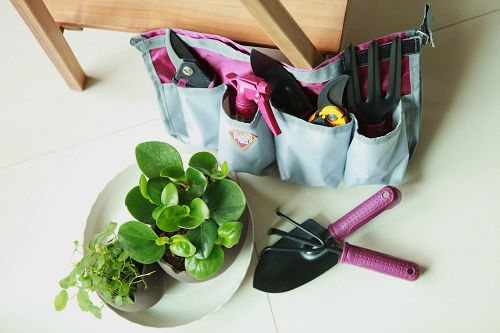

我看《杜拉拉升职记》 @ May 28, 2010
晚饭后，我捧着半个黄瓤西瓜开始看徐静蕾导演、主演的《杜拉拉升职记》。对它的注意开始于一个多月前，Hank从澳洲回来，随身的笔记本包里放着《杜拉拉升职记》的小说，非常正的大红色封面。他说：“这本书写了许多关于外企职场的经历，挺真实的，也有可借鉴的经验。”没几天我也买了一套，准备抽时间学习一下。一直到我看完电影碟片，书还没翻过。
之前看到一些负面评价，这种状况下，亲身经历、亲眼所见、自己去了解时印象往往会背道而驰的。对，我对电影《杜拉拉升职记》感觉不错，有笑有感动有共鸣，不知道小说怎么样。

我想谈谈以下几点：
1、主要三位女职员给我的感觉每天是去shopping或参加大趴提，打扮太妖了，领口开的忒低，妆也浓！这哪里是去工作？简直就是去夜场。造型师和化妆师对职场完全没有观察，而是卖力的去打扮诸位女演员，是这部电影最大的败笔。李艾找总裁签字时，穿着露了半个乳房的衣服，有性骚扰嫌疑！这样的着装破绽太荒唐。
2、销售总监王伟。。。在我看来大多数从业多年的商务男是不会穿着“窄脚西裤”去上班的，除非他刚工作，或者是个GAY。商务男也不会把自己打扮成花样美男，也少见从业多年还那么苗条的"王伟"。穿窄腿裤、打扮时尚、油头粉面的男人，这种形象在职场上很难给人以信任、塌实的印象。

3、办公室恋情。。。没有理由拒绝真实的感情，工作地点可以换成百上千，有缘分又合拍的人却很难遇到。我爱上的都是身边人，因为了解，日久生情。这没什么可耻的。不合适就分开，一个人的精神与情感世界稳定满足，生活才可能平衡。
4、玫瑰和王伟驾驶汽车的镜头，我当然特别想知道他们开的什么车，镜头拉下来是马自达。。。作为世界前500强DB的销售总监，这辆车有点架不住。但是杜拉拉消极购物的马自达MX5，与她还是很协调的。自从我在塞班租驾过马自达MX5之后，曾经不止2次梦见过它，这辆复古小跑车好象被我遗忘在某处，梦中的我不停寻找，每次居然是相同的梦境。国内已经进口销售，价格在33万左右。街上还是MINI跑的多，了解MX5的人还是少。

5、对王伟自言自语地一句台词很有共鸣：“每天忙来忙去，不知道到底为什么而忙。”
6、这是一部以爱情为主，职场为辅的电影。
现实中的复杂、黑暗与丑陋，电影里基本没反映，大多是正面、阳光的部分，看的时候有笑有泪，特别收录也好玩，不要错过。我和徐静蕾同年，看她在屏幕上演，有那么几秒钟感觉在看自己。电影中解压的方式除了购物就是吃，过去我还会选择旅行或是和朋友们在一起，现在更喜欢宅在家里做一名植物园丁或是烹饪，这种解压方式既环保又实惠。相信有许多人会在电影中找到自己的共鸣，以及似曾相识的场景和感触。
最近读到这样一句话：年轻时候你特别想得到的东西，现在却越来越不在意。
送给大多数职场人，或有一些启发？
风雨不收徐霞客 - 柏邦妮 @ May 25, 2010
四十岁的徐霞客说，他的一生中有八次心醉神迷。一回是梦，一回是记忆，还有一回是一幅画。那幅画描绘在冷庙的破壁上，有一个像他的人，还有一个像她的人。徐霞客举着火，他们同在一幅画上，但是隔着人群，车马，山水，还有壁画断裂处的一个拐角。
那么还有五回呢？偶遇的游方僧人追问。
徐霞客说，第四回是崇祯即位的那一年，他终于动身云游。三月入闽，风雨通宵达旦，野溪喧闹如雷。水涨船高，轻快无比，顺流而下八十里，过如飞鸟。羁绊在乡间的烦心琐事就像风烟一般消散，敞开衣襟，须发张开，无比畅快。他浑然忘记自己的年纪，宛如第一次离家远行，是二十岁的少年郎。
第五回是在林田，雨大，突然停止。有两条溪水在眼前闪耀，一条浑赤如血，一条碧绿如蓝。两条小溪竟然在此合流。有金蓝色的细鸟在林间鸣叫。于是他抬头看，突然看见悬挂的山峰，漆黑如墨，而脚下的峡谷，凝白如雪。他静静的站在那里，不做一声言语。
第六回是隆冬，清晨他叫醒忠心的顾仆，走入深山。树木蒙茸，石崖突兀，瀑布僵冻，如同白练横挂。天气实在是太冷了，冰块满枝，寒气凝结，大如拳，小如蛋，在风中摇坠，累累满树。走到树深崖穷处，不再有路，只能小心翼翼，赤手抓着野藤枯荆，滚爬而下坠。好容易在悬崖底下，找到一条枯涧，才算脚踏实地。抬头一看，危崖高耸，简直恍如隔世。顾仆扯来枯枝，点起火来。突然发现怀里还有一块剩饼，两个人烤了吃，一边吃一边发现对方非常狼狈，衣裳扯破，蓬头垢面。想来自己也是如此。主仆两人不禁朗声大笑起来。笑声惊动了一个僧人，僧人骇异，大雪封山，已经三个月不见生人了。
第七回是在麻叶洞。洞口大如斗，洞外水流湍急，只能伏水而入。当地人不敢进入，说有神龙精怪。徐霞客脱去外衣，爬进洞穴，爬了数十步，叫顾仆送火把来。像蛇一样爬行，背磨腰贴，肌肤被刮擦得生疼。山洞弯曲曲折，倒是干燥洁净。向西有一处缝隙，于是爬行上去，突然豁然开朗。平坦如榻，平平整整。顶上有石，如同莲花倒垂，结成宝盖，莹润洁白。四周的山石轻红，如同桃花。
火把已经燃灭了大半，顾仆叫自己回去。执意前行，洞天开阔，竟然到了山中。小如天井的地方，有一个老僧，怀抱着衣襟，张目承接正午的日精。红日当头，老僧久久不错一瞬。不久，几个华服丽人也行来，一个个流香转艳，却也坐日望空，姿势一般无二。
徐霞客悄悄的折回去，爬出小洞，只见一村的村人都守在洞外。老人小孩看见他生还，都喜笑颜开。一路上风餐露宿，冷遇不计其数。于是他感动了，一一感谢，说：“我守我的常，我探我的胜，却惊动了大家，害你们守候！”村人大笑着说：“读书人啊，你说的话文绉绉的，咱们也不懂！韭菜刚割下来，倒还鲜嫩，炒点小肉，打一些浊酒，家去吃饭！”
那天晚上，他在村人的灶台边喝得醉醺醺。灶火红融融的，乡野的村姑，看上了顾仆，两人在偷偷的嬉笑。他闭上眼，笑着睡着了。
最后一回是在香炉峰，突然遇见了大雾。云气浓勃，奔驰而来，很快就遮天蔽日，笼罩半山。在这样的大雾中，突然看到了心中的幻象。老迈苍苍的母亲，跛足脓肿的疼痛，盗贼钢刀的恐惧，温柔难舍的女人，此时都一一涌来。觉得疼，痒，酸，麻，想哭，想喝骂，想笑，想到死。一年年，一日日奔波流离，到底是为了什么？
一阵阵的浓雾如同流水，从他身上翻卷而过。水气淋漓，须发都湿透了。雾气散去，山间寂然，万物寥阔，坦荡。若山洗其骨，天洗其容。一切都是天地之初的模样。突然觉得万般思虑，一扫而空，自己渺小的身躯，就要与眼前的山树人烟交融，变成水晶一块，再也没有形体，没有渣滓，没有魂魄。
为什么我在这里？我到底要行去何处？哪里是我的终点？“不重要了”，徐霞客对自己说，“重要的是，我行走在天地之间。”
又见阳光 @ May 23, 2010
下午把车丢在附近洗，跑去扑土店里找小皮蛋玩，用JM们的话讲：它小的那么不真实。而且瘦弱，犬牙已经尖利，舔完我的下巴后抱着我的手指头当肉骨头换着角度啃，我忍忍忍。它的眉眼、行为与豆豆有几分相似，没一刻停歇，醒来就是吃喝拉撒，接着被扑妈关进巨大的笼子继续睡。扑妈好有爱，对待皮蛋就象对待小baby...
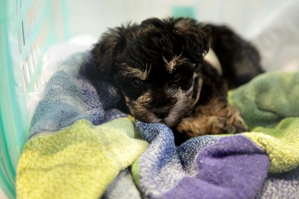
受了“箱子”美食记录的蛊惑，扑土跑去买了超多的鸭油烧饼回来，接着问问戴着墨镜象一女特务似的一手拎一袋鸭油烧饼出现在我们面前，看着桌上的烧饼大叫着说：“怪不得没多少烧饼了呢，原来被你买了。。。”我在旁边要晕鸟，烧饼也成抢手货了？箱子的爹称它为“全南京最好吃的烧饼”！
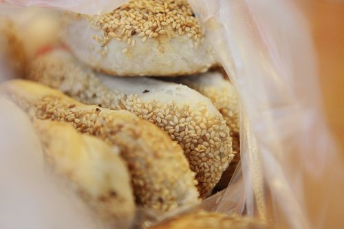
没一会儿我一同事携太太上场。平时在公司里同事就是一个个符号一个个零部件，大家组成一座大机器按部就班的运转，到时间机器关闭，各自回家。尤其在这儿相遇挺意外的。生硬的符号或零件忽然生动鲜活起来，黑白线条上了色，变成一副彩色立体的画面，可爱。如果不是同事有可能会是彼此走得更近的朋友，这可恶的职场。
周末几乎下了两天雨，这个下午终于出了太阳，一扫阴霾。
短暂的下午与IN CAFE门口的花草植物作伴，遇到喜欢遇到的人儿，心情顿时明朗许多。
Shot by Putoo-“more pix here”
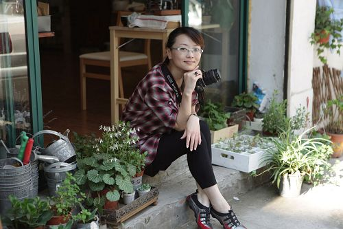
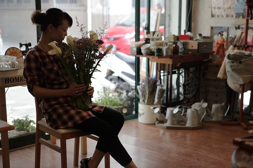
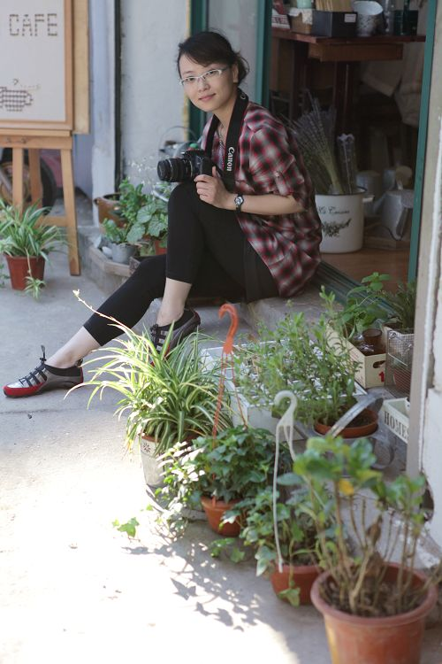
炖牛肉 @ May 21, 2010
昨晚炖烂的牛肉，今儿午饭起锅前加盐和少许鸡精。
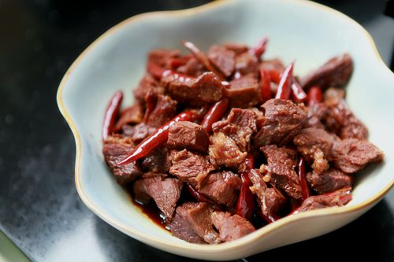
之前家里的黄豆酱油不怎么上色，换了双茶老抽，里面配了普尔茶和绿茶的茶粉，好极了。
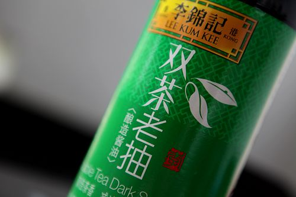
新鲜牛肉一般早晨到达超市，所以买牛肉得乘早，20多元的牛肉烧出来也就一碗的量。为了避免吃的时候挑花椒的麻烦，自缝一个小纱包，把花椒包在里面下锅煮。牛肉块儿进油里炒一下，加水、糖、料酒、酱油、花椒和干辣椒慢慢炖。
（昨晚手机拍摄）
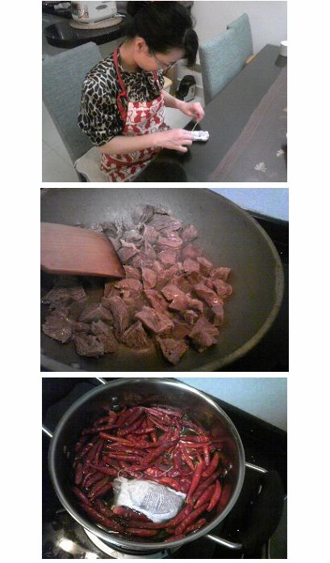
尽情饱餐。 @ May 19, 2010
到了星期三的晚饭，工作日还剩两天，6顿饭。
这周顿顿美味，晚饭炖了白米粥，糖醋青椒、蒜苗炒肉丝、凉拌猪耳朵，超市买回的玉米面馒头和整坛剁椒。每顿尽情饱餐，对生活便有了极大的满足感，这种满足感是在外觅食所没有的感受。即使三两个菜，也让人沉浸在过日子的平淡幸福中不能自拔，仿佛生活是由每顿家常美食穿起来的串烧，等着你一个一个吃下它们。
“你在自己的生命里上窜下跳，就是找不着出路，不幸福。”大概我也曾度过这样一个时期，当琐碎平淡的生活愈来愈让人贪恋，我想我找到了出路。
粗粮价格涨了，粗面馒头还没涨价，但不知道哪一天会涨。
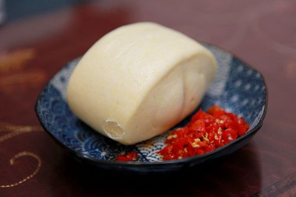
饭后改泡姐姐给的菊花茶，沁入心脾的清香。
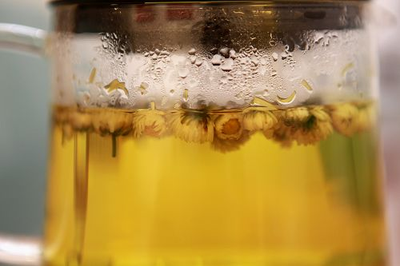
那些花儿 @ May 19, 2010
每天下班到家会去看看阳台上翻盆后的花草，走之前再去看一会儿，被如此有爱的眼神注视，植物们会不会生出更多的健康细胞呢？如今住房改善了，吃喝不愁，又有爱，改明儿分享些音乐给它们，娱乐一下。有实验证明，听不同曲风的庄稼，长势会不同。
解决了两盆栀子花的虫害，那些白色近乎透明的虫子在喷洒过药水后变成了棕色。叶子也没之前掉的那么厉害了。从山树那里了解到翻盆最好在清明前后，我是晚了些。旧土可以全用，我又额外添加了酸性土壤。浇透水，它们在5-8月间盛开，期待它们能如期开放。
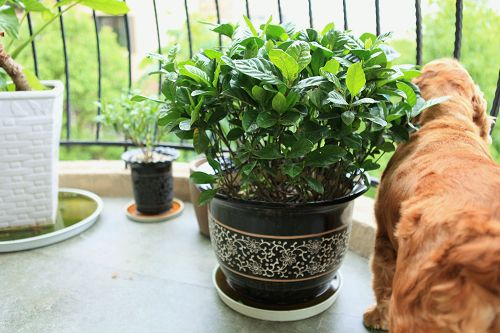
我家阳台上盛开的非洲菊，又名扶郎花，原产非洲南部。

园子里年年5月肆意盛开的皇冠菊，一片片的开在阳光下非常好看。


本以为它们会在冬季的阳台上毫无悬念地成为植物标本。没想到泛黄的枝叶在春季渐渐变成浅绿深绿，它们居然苟延残喘的活着。。。为此挑了两只紫砂花盆给它们，重新添了土施了肥，大难不死必有后福，是这个道理吧。
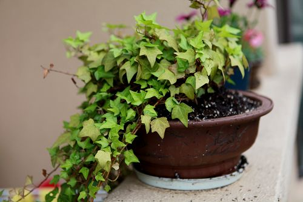
我身后正是在宁杭高速两边引起扑土阵阵欢喜的粉色小花。
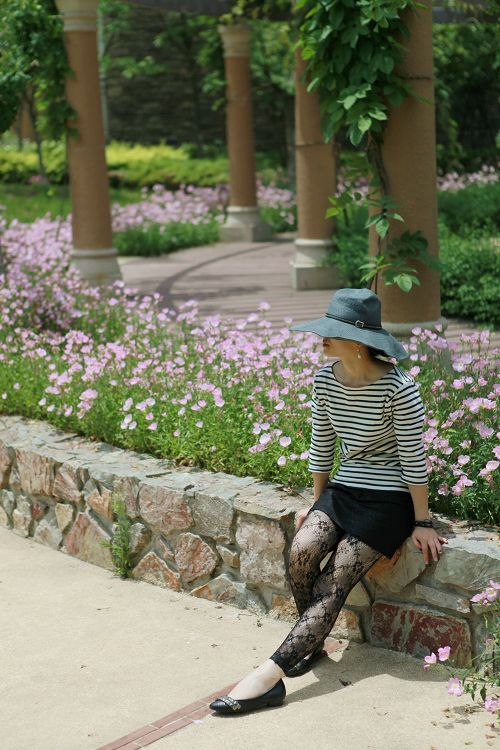
从昨晚等到现在才在问问那儿看到“五棱散尾鬼笔”图，肾上腺素没有增加，倒是胃跟视觉纠结了一秒。象是人们的毒舌，散落的孢子继续生出毒舌。。。这是在森林里吗？居然会遇到这么罕见的植物。
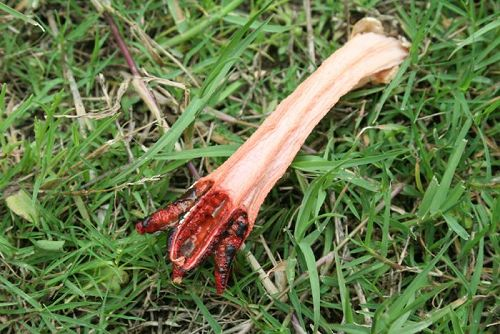
问问写到：号称鬼笔的几乎都是自然界的异类。在泥地下长大，窜出地面后，越伸越长，孢子破裂，散落人间，开始一轮又一轮的繁殖。我们遇见的这只鬼笔名为“五棱散尾鬼笔”。简直就是武侠小说使着怪笔当武器的神秘侠客江湖别称。五棱、散尾、鬼笔——字字形象。
据说今天去看尸体，已经神奇的消失了。最盛的时候，应该是触角还没有全部打开。孢子散去后，躯壳会迅速的萎下去。可能几个小时都不要。 用生命交换生命的延续？！我好奇这么臭的植物，狗狗们是何反应？

老家具店@LOFT @ May 13, 2010
扑土和问问忽然从走廊欣喜地扑进LOFT的老家具店。据说是东南亚进口的老家具，真的很古老，家里有老家具的尽管收好，是支升值股也说不准呢，如果舍得出售的话。这些家具沉稳、塌实、储存着记忆甚至是岁月的味道，让人完全可以尽情的使用它们。
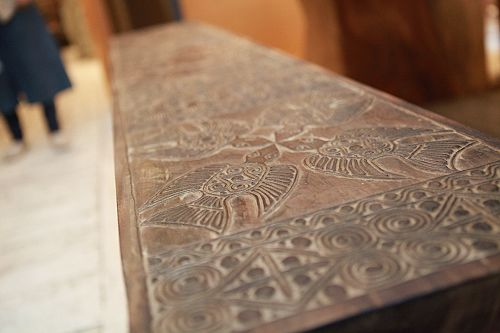
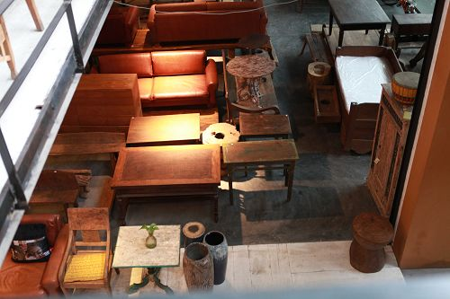
扑土爱的两人坐沙发，她对偶的后备箱么滴信心，否则肯定拖一个回南京唠。

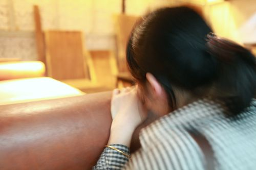
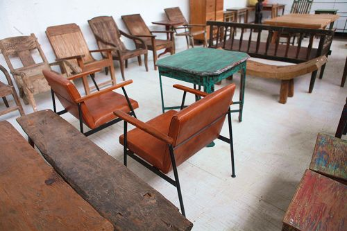
地板的缝隙居然卡住了我的鞋带，鞋带被缝隙一拽全散唠。
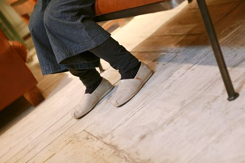
这个倒扣着的茶杯，店家私人用品，不卖不卖。。。
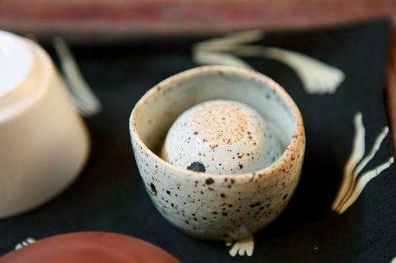
我们爱的歪脚凳，被问问带回家唠。偶今天去她家蹭饭，看到上面蹲着两盆健壮滴植物。。。

喜欢得坐上面不愿意离开哦。

W君拎着歪脚凳砸场子去。
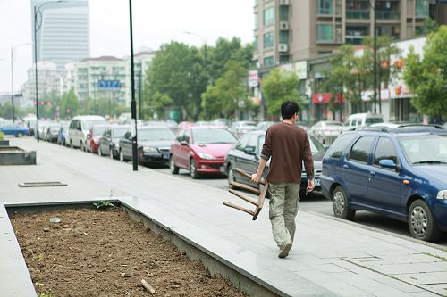
狠心发誓以后一定用这种实木桌子，划痕、油渍、灰尘啥的统统欢迎，频繁使用才更有岁月的光泽。现在市场上大多数家具没有老家具的涵量，得小心呵护着。
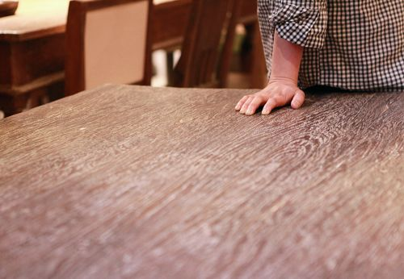
欣赏老家具，即使不能全部带回家，也让人心满意足。

偶超爱的色调与质感，这款复古的沙发所用的材质不是头层皮或二层皮，也不是前面全牛皮边角部分合成革，它就是实实在在整张牛皮制作。货真，价实不实没敢问。
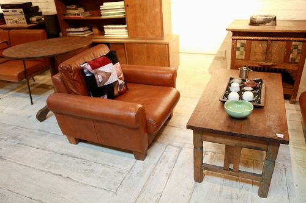
就要离去，再留恋地坐一坐。
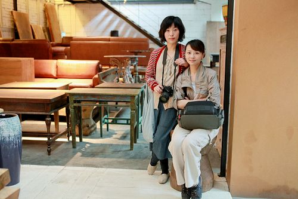
老家具是不是不会用铁钉呢？感觉这张椅子直接凿出来，再没有任何加工。
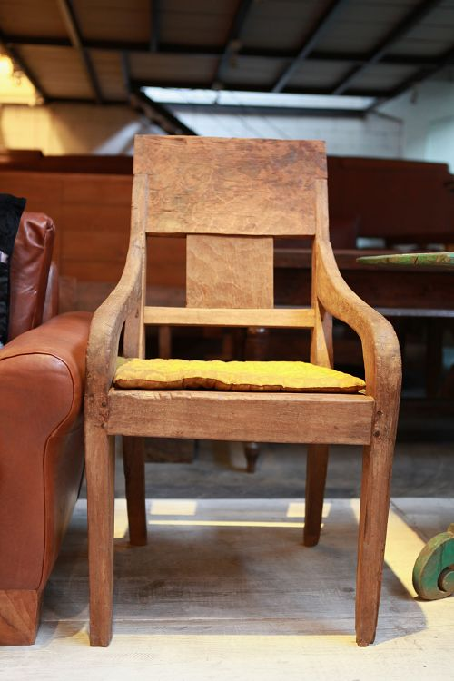
蹭饭 @ May 13, 2010
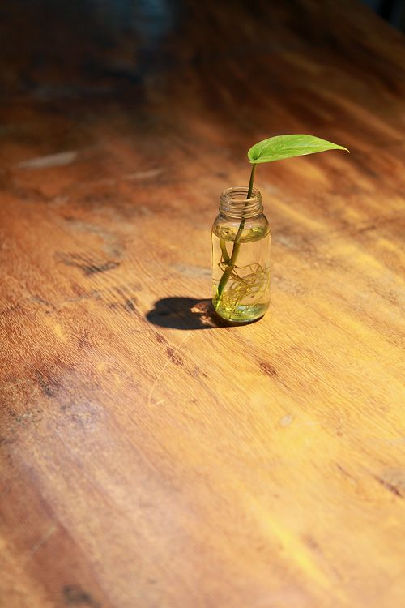
拍摄于杭州丝联LOFT
一周几乎没做饭，混到周四，中午炖了黑米粥，准备晚上回家吃。问问做了晚饭问我去不去？正求之不得。老妈不知道什么时候从台湾旅游回来，这种情况下蹭饭机会还是挺难得的。
即使几天没吃家常饭，肠胃还是会有些不适，吃快餐吃到发指，有时恨不能弄点盐和味精冲杯水喝。话说自己吃饭不正常，狗狗们也就没得啥指望了，它们也是饿到不行才会去碗里叼几颗狗粮嚼嚼。
晚饭喝了一杯他们从杭州带回的桂花酒，那个香甜，以及两杯瑞典的红酒，香料味浓，据说是丁香的味道。我的确每次去她家都会吃两碗饭。酒足饭饱后边聊天边喝明前茶，期间间断传来臭气，我倒是没闻到，这臭气自然是外外和K来背。。。末了当我满足地回到家收到问问的电话“沙发后面一泡便便。。。”也算另一种意境下的品茶时光吧。
愉快之下我那幼稚的神经琢磨着：要是租一间大的LOFT，大家搬一起住，多好。
送给我们的杭州行 @ May 12, 2010
张靓颖唱的“印象西湖”是喜多郎作曲，听喜多郎纯音乐的“印象西湖雨”也好。我们到杭州的那天也在下雨，春天如果想找个地方走走，可以考虑杭州，这时候的杭州很美。
扑土推荐了范宗沛的“摆渡人之歌”，好比千朵桃花一树生，非比寻常泛泛亲，你莫把姑娘当外人。他们在花丛间轻轻弹唱，我们在水波间荡漾。这深处的江南，让人怎不流连难忘。
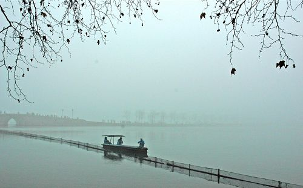
雨还在下落满一湖烟
断桥绢伞黑白了思念
谁在船上写我的从前
一笔誓言满纸离散
雨～～～站在湖边
雨～～～遥望北岸
雨还在下落满一湖烟
断桥绢伞黑白了思念
谁在船上写我的从前
一笔蝴蝶满纸离散
我的告别从没有间断
西子湖上一遍一遍
白色翅膀分飞了流年
长叹一声天上人间
雨还在下淋湿千年
湖水连天黑白相见
谁在船上写我从前
一说人间再说江山
拍春天 @ May 12, 2010
一片绿色中一眼注意到这么Q的小圆球，不容易对焦，是花是果实？
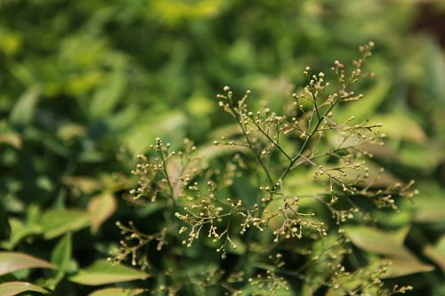
宁杭高速边上开着许多这样粉色的花，中午遛狗的时候拍它，这花每年春天都开得灿烂，野花的生命力真是强，土黄色花粉沾到我的袜子上，狗狗的脸上身上都是。
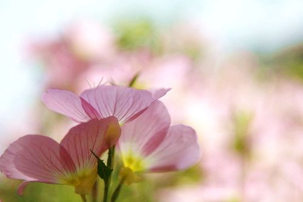
最忆是江南 @ May 12, 2010
宁杭高速两边那些不知名的小野花争相盛开，引起扑土的阵阵惊叹，我也是从来没有在春季，还是凉爽的春季前往过杭州，下了阵雨，空气洁净，每片叶子都水灵灵的，大自然郁郁葱葱一片繁荣。
我们在西湖区转了两次，好象就快爱上这座城市了。不知道生活其中的人的感受？温度适中，自然景观保护的很好，空气中没有大量灰尘，可以放心的放下车窗。步行一小段在三台山路上，据说那条路出名是因为周边饭店和喝茶地方比较多，另外杨公堤也很漂亮。三台山路游人少，安静，远处有山，近处有湖，杭州才是真正意义上的江南，南京算半个，杭州美得有灵气，大气，不似苏州小家碧玉，人造庭院，杭州是与自然和谐的美。问问现在还在杭州浪漫着，我和扑土周日晚上便返回了，所有念想只待下次再去。
三台山路附近的小竹子，修剪得象万年青，簇拥着木栈道，第一次注意到如此迷你的竹子。

杭州学国外学得还是挺有效率的，停靠在公交车站方便市民用的自行车，市民只要刷下卡就可以使用它。游客需到固定点支付300元抵押金。

这是在维也纳拍到的。

布拉格的家伙就大了，得花钱租，充电两轮车。


6e从前一天晚上就向我们念叨着“绿茶”餐厅，它建在一片水域之上，因为靠近丝绸博物馆，游人很多，据说常常有1、20人排队等位子。绿茶周围有茶园，内部装修有点云南风格，菜的口味不错。可是我觉得太吵了，水上餐厅必然对水多少有些污染。

贴几张绿茶有特点的美食。

第一次尝到用新鲜芒果肉和冰块搅拌在一起的芒果冰沙，感觉在吃芒果。
大多数芒果冰沙用的是浓缩芒果汁。

在杭州吃的第一顿晚饭是在西湖边上的江南阿二，那个红烧肉好吃，塔牌黄酒以及菜价印象深刻。6个人吃了500多，没吃饱，末了还要了份面条。。。

蜜桃咖啡馆@杭州 @ May 12, 2010
前一晚俺头疼地扑倒在酒店床上，扑土则对着电脑勤奋地查着第二天可去的地方，其中“蜜桃咖啡馆”以为是左八设计的LOGO，求证后不是。蜜桃好象挺有名的，名字起的好粉嫩呐。第二天午后我按照GPS指示找到它，问问、W从南京抵达与扑土在那里已经吃上了。确切的说蜜桃更象是休闲餐厅，看了它的网站介绍，经常会举办一些小型的音乐表演。感觉还不错，比想象的要大许多，环境也好。蜜桃是LOFT里最大的吃饭喝咖啡的点儿，生意看上去也不错。听说老板是设计师。
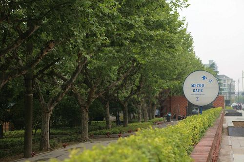
拍这张的时候我说：“扑土，把头低下去。”她真的把自己藏得无影无踪唠~

超喜欢蜜桃的白色大窗户，白色窗帘。

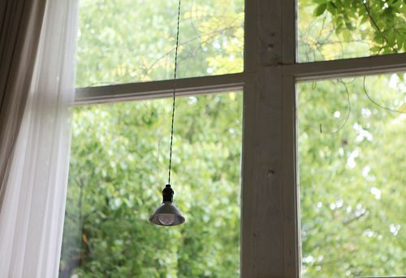

他们吃的杯盘狼籍我才到，就这样我还是在里面扒了两口吃的，虽然我刚在绿茶吃过午饭。
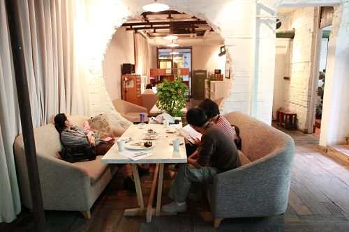
蜜桃的前院又是另一种调调。


她抿下一口拉花的卡布其诺，扭头朝声音传来的方向张望，斜躺在沙发里的我（坐没坐相）就势从这个角度拍下她。或可以在拍摄中更勤奋地爬高上低，以获取更多新鲜特别的角度？她身后白色的大窗户真是太美了。

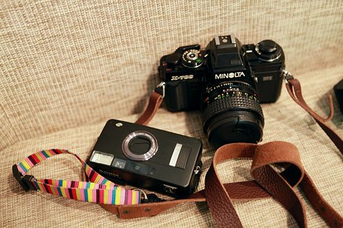
蜜桃好象分两块，这儿是供工作人员使用的吧台，服务员一身黑色，系着拖到脚面的黑色围裙，范儿足。
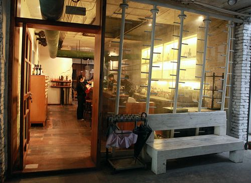
应该是招牌的蜜桃咖啡？如果我没记错的话，记性超不好。

原先工厂里留下的巨大排风扇，这座让顾客不可忽视的摆设如今成为餐厅里工业设计感十足的观赏品。得吊车才能搬得动它吧？
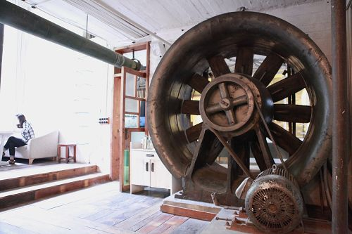
卫生间里面还有个小小的庭院，长着一棵树，去的话，一定观摩一下里面的设计。

杭州MUJI展 @ May 12, 2010
MUJI展不是我们此行的目的，恰好遇上欧阳应霁喜欢的产品也不错，没有设计的设计，还真需要不一般的功力才可能有感觉，当然YY功力深厚也可以。之前我一直觉得MUJI就是劳保用品，爱屋及乌心态下会试图去了解、理解。
看过MUJI展，忽然觉得这个品牌有点太极或气功的高玄，非我这样的小民所能体会，转念一想，MUJI产品好似照片中的留白，给予人想象空间并突出主题。
万象城这座商场里的MUJI店没有南京水游城价格好，南京店常常有优惠，也有可能销售不好不得已优惠？南京MUJI货品没有杭州丰富，由此可见对于商家，南京是位于杭州之后的城市。类似产品在他处也可寻到零散销售，MUJI成功之处是将产品做到系列化，提供品质保证，倡导低碳环保的生活方式，自然胜人一筹。
这条走廊连接了两个小展厅，白色墙面+金属灰地面，让人想通过N次。
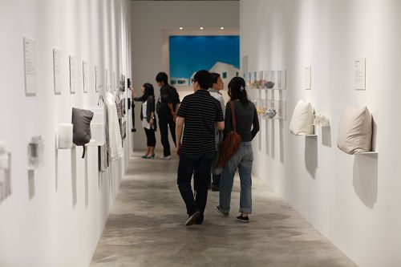
好喜欢这个展厅的地面，好喜欢工业感的设计，搭配原材料感强的家具，也有和谐美。
看着MUJI产品少有占有欲，但那么多MUJI产品成列在眼前，却有想生活其中的愿望。

全棉环保手袋，邀请各国各行业名人，从建筑设计师到服装设计师，艺术家、作家等等自创图案手绘在上面，艾未未画了只表情很Q的草泥马，呵呵~每款全棉手袋都很薄，做展示可以，怀疑实际使用会有承重问题，缺乏安全感。

在MUJI店铺里扑土帮忙拍的，我不是摄影师，而是摄影爱好者。
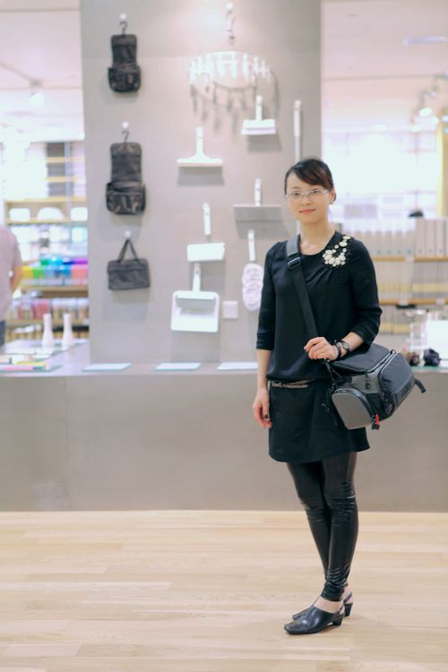
Dress Blog @ May 11, 2010
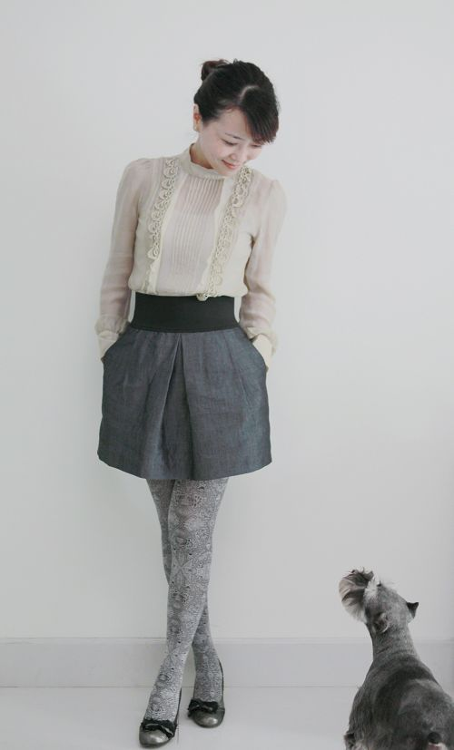
丝联LOFT@杭州 @ May 09, 2010
在杭州金华路上的丝联LOFT（好奇为何取名“丝联”）的蜜桃咖啡馆，除了咖啡还有可口的西餐，价格朴实。在整个LOFT里属最大的休闲餐厅。（下篇详解）
黑白摄影工作室“快门”前，她们，不，是我们各自按下自己或胶片或数码相机的快门，很应景吧~
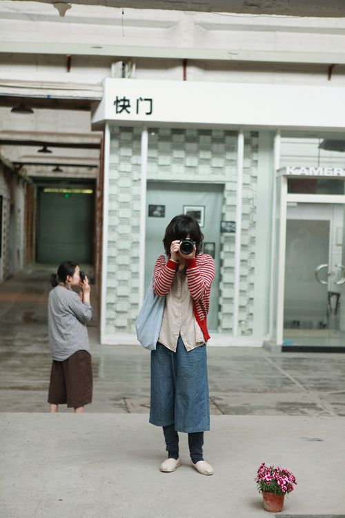
客串《Chicken Run》。

“蜜桃”古朴的前院。
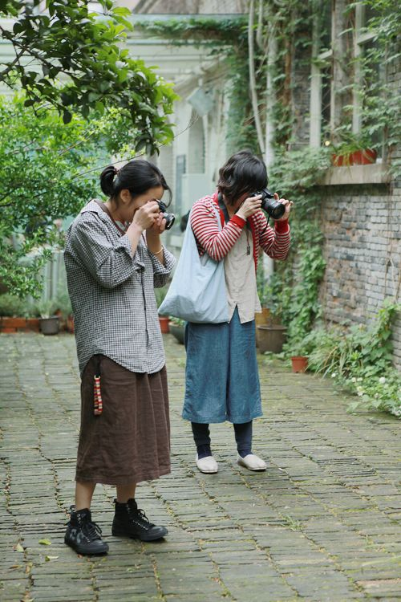
LOFT前身是个大工厂，大多斜顶，下有一排排利于采光通风的窗户，尤其爱靠近屋顶的窗户，在安静的走廊里行走，好象行走在一排明亮的光线下。
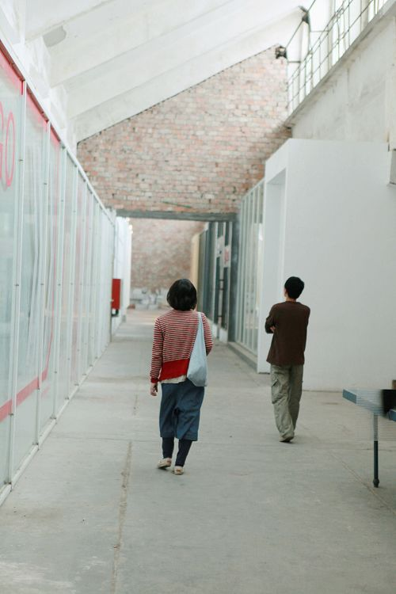
坐在斜对面的陌生女孩，甜美的五官在白色窗帘前更加柔美。
这是我拍下的第一张中的她，第二张她很配合地朝着镜头微笑，有点灿烂，象一朵渐渐绽放的百合。
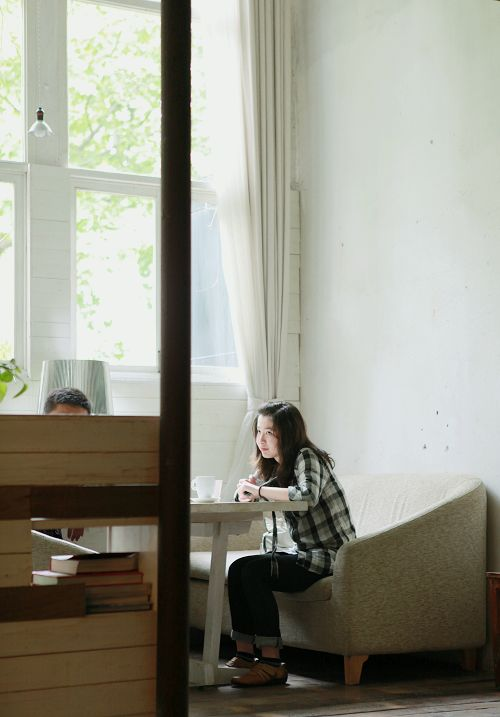
玻璃墙内零星摆放着中式实木家具，零星。。。留白，另一种想象？

买菜 @ May 05, 2010

下午从问问家出来，按照她指的方向找到了那家地下菜场。在我相遇的有限的几个菜场里，这是我见到的最明亮干燥的菜场，可能因为是地下，白天也开着日光灯，蔬菜们清清楚楚地呈现在顾客眼前，丝毫掩饰不了什么。看到一群新鲜蘑菇摆在菜摊上，想起Maggie昨天在这儿发现新鲜松茸的心情，于是我买了最爱吃的新鲜香菇，以及木耳菜、青椒、雨润的肉末和肉丝、黄瓜两根，1/4西瓜和一把大香蕉。心里还惦记着Maggie家红烧小公鸡的味道，犹豫之下还是买了一只回去。
晚饭很丰盛，喝上一罐黄啤，神仙日子。
问来短信：让我们一起做饭吧。。。
很好奇，她家晚饭究竟烧了啥？
聚了又聚@新居 @ May 04, 2010
假期三天远远不够安排一切事务，最最要紧的是我好象一直没能从工作的疲惫中恢复过来，躺下来便不想起，起来了浑身散了架似的。这当然不是我的理想生活，如果身边没有亲朋们的温情，那简直不知道为什么而存在？
shuwua从北京回来，女友们聚了又聚。恰好Maggie在河西买了120平的新居所，一个人搞设计跑装修，去年年底到现在，终于住进去了，下午茶顺理成章。新居所采用了我的建议，（请允许我小小得意一番）在装修和家具中加入少许东南亚元素，让千篇一律的家显得很有生活的味道。如果身边常常有许多快乐片段，单身女性的生活怎会孤苦？你有一个男人，也不必弱智的炫耀，因为男人不过是锦上添花，他们永远不是生活的主要部分。
风格迥异的女友们相聚于新居所下午茶，世界上一定有许多这样的下午茶，在自留地看到另一些女性们的“理想的下午茶”，也有意思，各人选择不同的生活方式，但总有一些共同点让大家心甘情愿地聚在一起，也许是善良、爽朗，也许是孩子般明亮的心？重要的是，我们厮混在一起，不为世俗利益，不为相互利用，不要彼此抬着混社会，男人也不是我们的主要话题，这当然是最轻松愉悦的友谊。
小原子在教授口金包缝纫经验，大家学得认真。
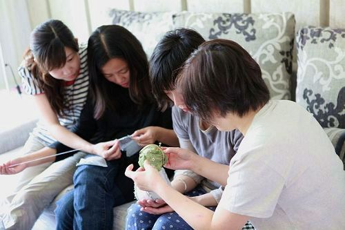
并且当场缝制好送给Maggie的灯心绒面料的口斤包，放在随身包包里装零钱很方便。
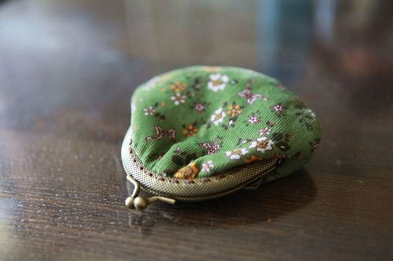
介绍她去台湾的行程，有一天自己安排去泡温泉，不同价格档次的温泉，讲解得很详细。她身上的黑白风格棉麻裤，快成大家的仙女裤了。
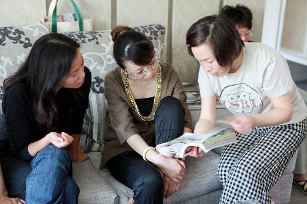
shuwua这次回来也在忙装修的事儿。

她的小本子上记录着材料费用，房子图纸。。。有条理的人无论在工作上还是生活中一样会有条理。

下午茶准备了丰富的水果餐点，当然还有绿茶唠~

照着shuwua棉布包包的款式，小原子给问问手工做了一个一样一样的，她有多喜欢？看看包包如何挂在身上便知道，她们给这个包起名叫“离家出走包”。当然这么挂着，也有内衣外穿的嫌疑~
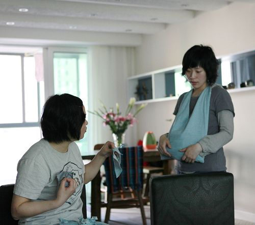
据说旗娘此姿态时，大家正在谈论“凶”器。于是她默默地低下头，看了看自己？

没做好准备便惊恐出现的打劫者。

进入不同的圈子，会受到不同的影响。
比如我现在也倾向棉麻面料的衣服了。

用老房子房梁上的老榆木制作的餐桌椅，很沉，可以当传家宝。
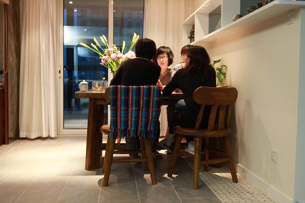
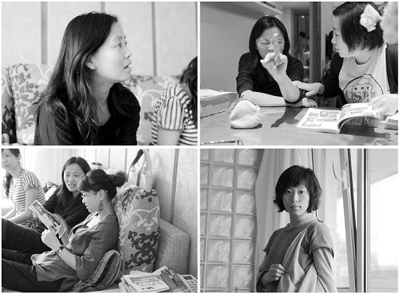
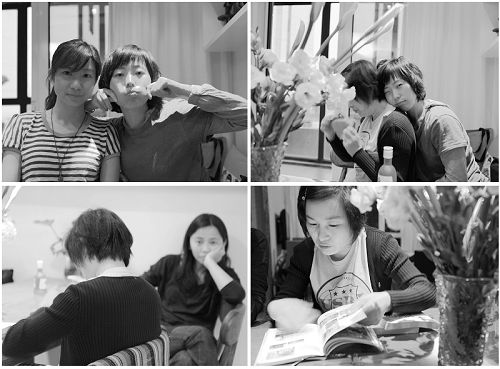
扑土端上一锅青菜肉圆汤。我们严重怀疑不愿露面的Maggie事先准备好了饭菜，不然怎么那么快就烧好了一桌美食呢？最初计划仅仅是下午茶啊~
看着就好吃，还有甜甜的月桂冠牌梅酒，在海关买的，我准备打个前战，为各位探探麦德龙有没有卖？中间未掀盖的砂锅里炖了红烧小公鸡，吃起来粘嘴哦，好吃的印象太深刻了。如果，人生就这样吃吃喝喝，多好。

大口吃肉，尽情欢笑。 @ May 02, 2010
都说香港是个物欲都市，仿佛咽下鲍鱼，挽上LV，港人便满足了。 诚然，香港“犬儒的吃喝玩乐”盛行。但爱吃爱玩爱名牌，也包含了宣泄压力的原始冲动，虚荣，倒在其次。 为这个“为食忙”的城市，香港同事说，港人焦虑，直接影响到如厕品质，还称这是最多港人之疾。--周轶君
在蓝焰法式餐厅与JM们大口吃肉时刻。
所到之处，尽情欢笑。记得有一次去听民谣，观众身后的我们完全说笑到忘情，被人训斥两次，快乐，总会受到限制？

煎烤结束的黄鱼，在铁板上排列整齐，象上班族。

总是，迫不及待，看片。

两三轮各类肉等吃下来，再也吃不下了。
没有折扣的前提下，亏啊~

清酒，来助兴。

银雪鱼被煎成了大饼肌理，是不是？

香蕉切成段儿，煎好，上面铺上一球冰淇淋。
燃烧的冰淇淋。
她，好乖哦。
我们8个人在这个地方混战拍照，居然被围观。。。

意外出场的主角 @ May 02, 2010
以为会是精力充沛的Zakky一起来登山，然而出现的是外外。
它在楼下小解后上了问问的车，再如何，也不愿离开。
于是，它成了登山的主角。
只有它一只狗狗，人再多也不稀奇，哼。
有人问：“对宠物的情感有时真让人难以理解，它们会占用主人很多时间？”有时，我自己也难以理解，喜欢何须原因。外外既高兴又努力地行走着，还有鼓励的眼神时刻伴随它~
山里的空气合着满目葱翠，时不时会引起外外的兴趣，它驻足，观望。是不是胸中也会泛起“心旷神怡”？

外外：“我需要一副糖果色复古的太阳眼镜。”
阿姨给你画一副哦~

山口设了关卡，车不再能开上山了。
不得不......步行经过这段本可以开车忽略而过的新路。
路再好，也是上坡，也要挥汗。

这块被缝纫后的圆点全棉花布，被问问用来做“相机包”。
摄影杂志上有句印象深刻的文字：用相机留住她的容颜。